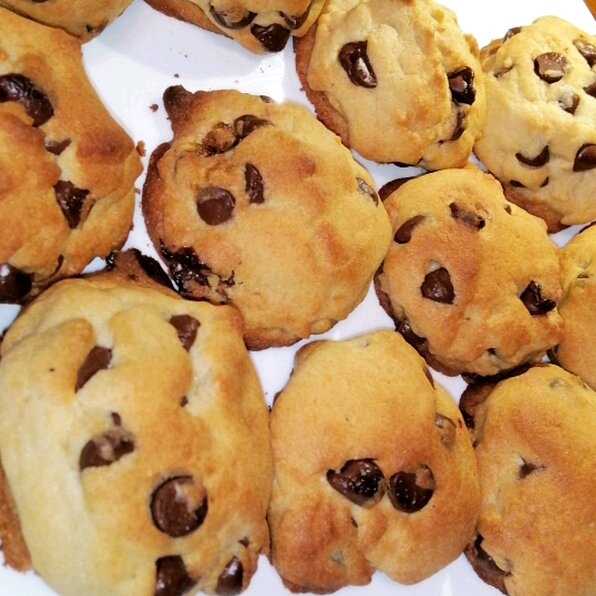

Cookie

Description
Prep:
20 mins
Cook:
10 mins
Additional:
30 mins
Total:
60 mins
Servings:
24
Yield:
4 dozen
ingredients
- 1 cup butter, softened
- 1 cup white sugar
- 1 cup packed brown sugar
- 2 eggs
Steps
- Preheat oven to 350 degrees F (175 degrees C).
- Cream together the butter, white sugar, and brown sugar until smooth. Beat in the eggs one at a time, then stir in the vanilla. Dissolve baking soda in hot water. Add to batter along with salt. Stir in flour, chocolate chips, and nuts. Drop by large spoonfuls onto ungreased pans.
- Bake for about 10 minutes in the preheated oven, or until edges are nicely browned.